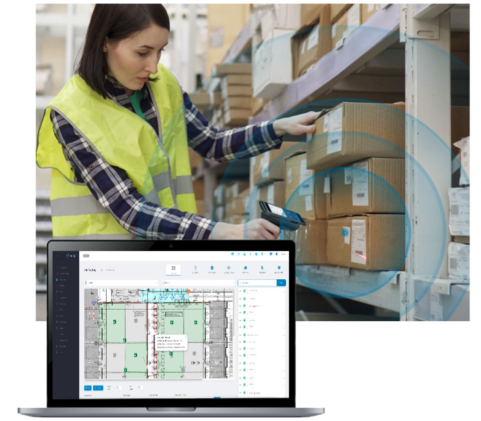
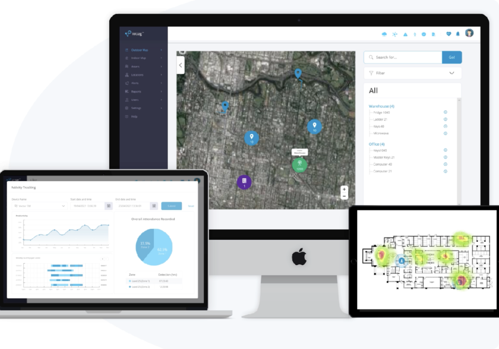
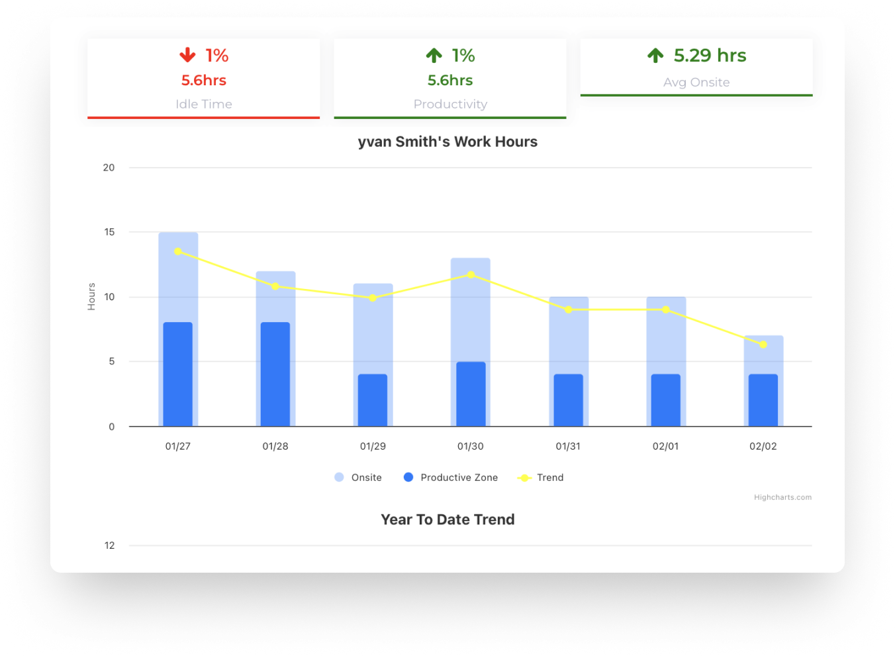
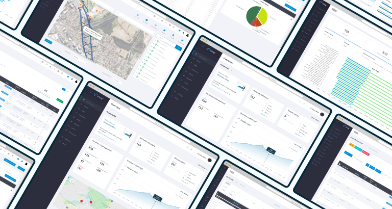

IoT Security & Governance
System Security & Control
Security designed into the Operational Intelligence ecosystem, Operational Intelligence platforms depend on trusted information. Every connected device becomes part of the operational ecosystem. iottag helps organisations maintain visibility, security and governance across the entire technology lifecycle.
Security Beyond The Device
Security is not limited to hardware. The iottag platform is designed to support secure operation across every layer of the technology ecosystem. It extends across:
Secure Device Identity
Every connected device should be uniquely identifiable. This helps organisations maintain confidence in operational data. The platform supports:

Firmware Management & Version Control
One of the most overlooked risks in operational technology is inconsistent firmware deployment. This helps organisations maintain consistency across thousands of deployed devices. The platform supports:

Asset Lifecycle Governance
Connected devices evolve throughout their operational life. Providing visibility throughout the entire device lifecycle. The platform helps organisations manage:

Systems Security Monitoring
Helping organisations identify issues before they affect operations. The platform provides visibility into:

Governance At Scale
The platform helps organisations maintain governance, consistency and visibility across complex deployments. Large operational environments may involve:


Trusted Information Starts With Strong Governance
Discover how iottag helps organisations manage security, governance and operational trust across connected environments.